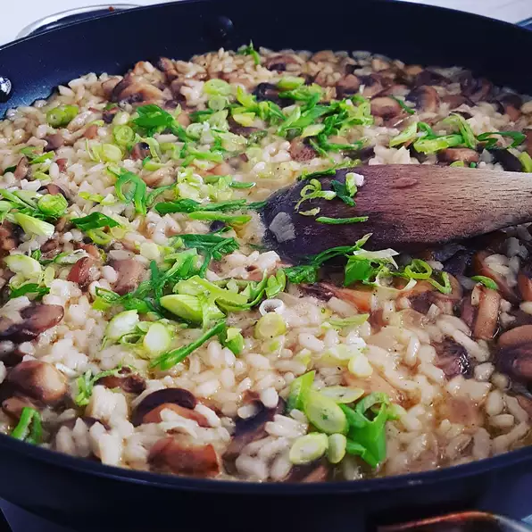

Mushroom Risotto

Description
Delicious mushroom risotto made with vegetable broth, cream, and a variety of fresh vegetables. Serve as a side dish or filling main course.
Ingredients
- 1 tbsp Olive Oil
- 3 small Onions, finely chopped
- 1 clove Garlic, crushed
- 1 tsp Fresh Parsley, minced
- 1 tsp Celery, minced
- Salt and Pepper, to taste
- 11/2cups Fresh Mushrooms, sliced
- 1 cup Whole Milk
- 1/4cup Heavy Cream
Directions
- Heat olive oil in a large skillet over medium-high heat.
Saute the onion and garlic in the olive oil until onion is tender and garlic is lightly browned.
Remove garlic, and stir in the parsley, celery, salt, and pepper.
Cook until celery is tender, then add the mushrooms.
Reduce heat to low, and continue cooking until the mushrooms are soft.
- Pour the milk and cream into the skillet, and stir in the rice.
Heat to a simmer.
Stir the vegetable stock into the rice one cup at a time, until it is absorbed.
- When the rice has finished cooking, stir in the butter and Parmesan cheese, and remove from heat.
Serve hot.